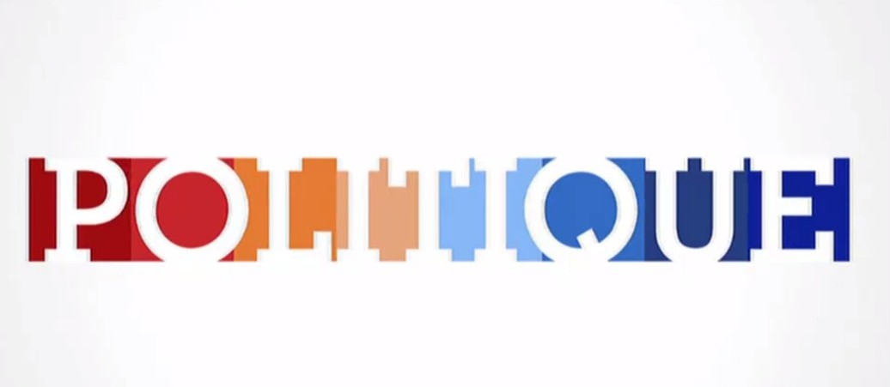

Comment les réseaux sociaux sont-ils devenus une place stratégique pour les politiques
Les réseaux sociaux
Lorsqu’on parle de réseaux sociaux, on voit souvent les grands sites et les grandes applications comme Twitter, Facebook Instagram ou encore TikTok, mais en réalité les réseaux sociaux n’est, au final, qu’un groupe de personnes ayant au moins un but en commun. Un groupe d’amis est déjà en soit, un réseau social.
On remarque que le terme « Réseau Social » n’apparaît qu’après la réelle apparition de ces derniers. Il est donc possible d’utiliser son réseau social afin de demander quelque chose, de véhiculer un idée ou même de débattre avec d’autres gens. Ils aident aussi les gens à trouver un travail. Les réseaux actuels étant instantanés, il est facile d’établir une conversation avec d’autres personnes. Il faut cependant se demander pourquoi lie-t-on politique et réseaux sociaux, puisque jusqu’à présent, nous n’avons parlé des réseaux sociaux qu’en termes pratiques.
Le Soft Power des réseaux sociaux
Comme dit précédemment, les réseaux sociaux peuvent servir à véhiculer des idées. Qu’on le veuille ou non, le fait de lire divers avis sur un sujet nous influence, et nous « aide » à avoir un avis sur ce sujet. De cette même manière, les politiques peuvent facilement véhiculer leurs messages et leurs idées, sans soucis et instantanément. Cela leur permet aussi d’atteindre le public le plus présent sur les réseaux sociaux : les adolescents et les jeunes adultes.
Les jeunes et la politique
En échangeant avec des jeunes et, par la même occasion, de les impliquer sans pour autant le montrer, dans le système d’échange social (une relation de confiance basée sur l’échange et sur le partage d’un même monde). Cela explique aussi les politiques qui, en ce moment agissent de plus en plus de manière extrême afin d’attirer un maximum de Buzz, autrement dit de faire parler de soi. Ce système repose sur la communication. Les informations sont transmises, par un moyen plus ou moins choquant afin de faire le plus parler de soi possible, et ainsi augmenter l’estime que les autres ont de soi.